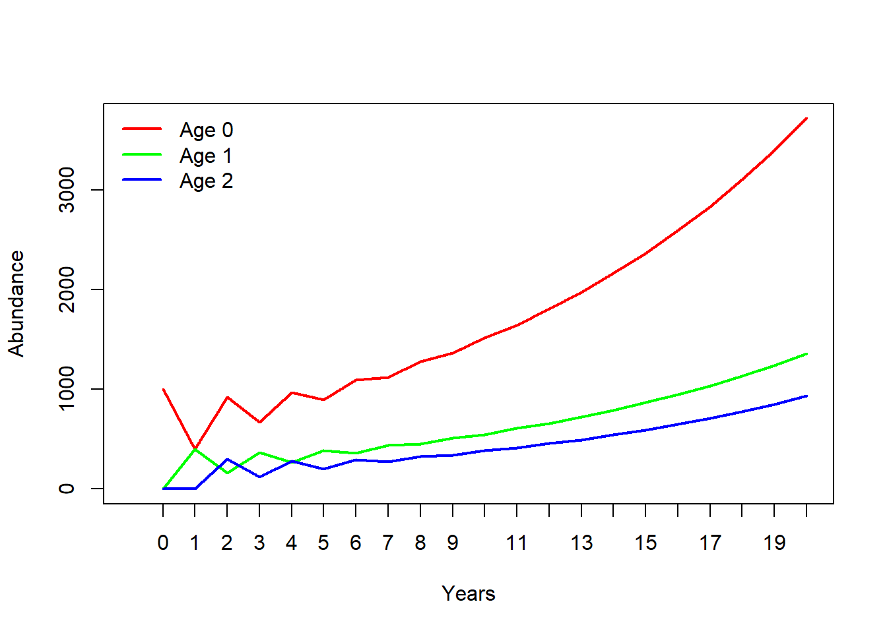
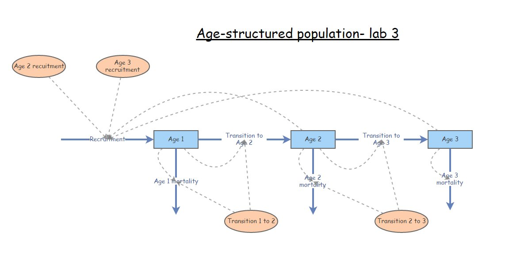

Lab 4: Matrix population models
NRES 470/670
Spring 2021
In this lab we will get back to age-structured populations: specifically, we will get familiar with matrix projection models! Remember that while matrix population models may look complicated, they are just a fancy, age/stage structured version of basic discrete exponential growth (\(N_{t+1} = N_t \cdot \lambda\))!
Mathematics of matrix population models:
We all remember the finite-population-growth equation:
\(N_{t+1}=\lambda \cdot N_t \qquad \text{(Eq. 1)}\),
where \(N\) is abundance (as always), \(t\) is time, often in years but could be any time units, and \(\lambda\) is the multipicative growth rate over the time period \(t \rightarrow t+1\)
In other words, \(\lambda\) is the population multiplier per time step. You want next year’s expected abundance? Just multiply last year’s abundance by \(\lambda\)!
The matrix population growth equation looks pretty much the same!
\(\mathbf{N}_{t+1} = \mathbf{A} \cdot \mathbf{N}_{t} \qquad \text{(Eq. 2)}\),
where \(\mathbf{N}\) is a vector of abundances (abundance for all stages), and \(\mathbf{A}\) is the transition matrix, which we have seen before.
We can be more explicit about this if we re-write the above equation this way:
\(\begin{bmatrix}N_1\\ N_2\\N_3 \end{bmatrix}_{t+1}=\begin{bmatrix}F_1 & F_2 & F_3\\ P_{1 \rightarrow 2} & P_{2 \rightarrow 2} & 0\\ 0 & P_{2 \rightarrow 3} & P_{3 \rightarrow 3}\end{bmatrix} \cdot \begin{bmatrix}N_1\\ N_2\\N_3 \end{bmatrix}_{t} \qquad \text{(Eq. 3)}\)
Where \(P_{1 \rightarrow 2}\) is the probability of advancing from stage 1 to 2 (per capita ‘production’ of stage 2 individuals next year by stage 1 individuals this year), and \(F_2\) is the fecundity of stage 2 (per capita production of offspring next year by stage 2 individuals this year).
NOTE: survival P in a stage transition matrix is NOT the same thing as the survival rate g(x) in a life table. What’s the difference?
In a stage-based matrix model, individuals can survive in one of two ways- they can stay in the same stage, or they can transition to the next stage. To compute total survival, you have to add up the probability of staying in the same stage and the probability of moving on to the next stage!
NOTE: fecundity F in a stage transition matrix is NOT the same thing as age-specific birth rate b(x), \(b\). What’s the difference?
Birth rate \(b_t\) from life tables is the per-capita rate of offspring for age \(t\) individuals (individuals that are exactly age t). We can think of this as the number of offspring produced per female at the moment they reach \(t\) years of age.
Fecundity, \(F_s\), is the per-capita rate by which individuals that were in stage \(s\) at time \(t\) contribute new offspring to the population at time \(t+1\). Sounds pretty similar, right? What’s the difference?? Well, the difference is exactly one time step (which is typically one year)!
That is, Fecundity \(F_s\) also takes into account the survival rate to the next time step (e.g., \(P_{1 \rightarrow 2}\))!! For an adult of stage \(s\) to contribute to the next generation, it must first survive to the next time step before it can reproduce!.
\(F_s = P_{surv.this.year} \cdot b_{age.next.year} \qquad \text{(Eq. 4)}\)
Matrix operations:
There is a lot we can do with matrix population models. The most obvious one is projection:
Projection:
This lab demo contains a bunch of R code (R is pretty good at running matrix population models!). If you want to follow along in R, you can find the R script here. I recommend right-clicking on the link, saving the script to a designated folder, and loading up the script in RStudio.
We have already seen the projection equation (Eq. 2, above). Here is how we can implement this in R:
########
# Syntax for projecting abundance using a transition matrix (NOTE: this code won't run until we specify the terms on the right)
Year1 <- projection_matrix %*% Abundance_year0 # matrix multiplication!Let’s try it:
First, build a projection matrix:
######
# First, build a simple projection matrix
projection_matrix <- matrix(
c(
0, 1.2, 3.1,
0.4, 0, 0,
0, 0.75, 0
)
,nrow=3,ncol=3,byrow=T
)
projection_matrix## [,1] [,2] [,3]
## [1,] 0.0 1.20 3.1
## [2,] 0.4 0.00 0.0
## [3,] 0.0 0.75 0.0Next, let’s build an initial abundance vector:
######
# Then we specify initial abundances for the three age classes
Abundance_year0 <- c(1000,0,0)
Abundance_year0## [1] 1000 0 0Now we can run the code for real!
######
# Now we can run the code for real
Year1 <- projection_matrix %*% Abundance_year0 # matrix multiplication!
Year1## [,1]
## [1,] 0
## [2,] 400
## [3,] 0Now we have 300 individuals in stage 2!
Let’s project one more year:
########
# Project another year
Year2 <- projection_matrix %*% Year1 # matrix multiplication!
Year2## [,1]
## [1,] 480
## [2,] 0
## [3,] 300Finally, here is some code to project many years into the future! You may want to re-use some of this code for the exercises below.
##########
# Use a FOR loop to project many years into the future
nYears <- 20 # set the number of years to project
TMat <- projection_matrix # define the projection matrix
InitAbund <- Abundance_year0 # define the initial abundance
## NOTE: the code below can be re-used without modification:
allYears <- matrix(0,nrow=nrow(TMat),ncol=nYears+1) # build a storage array for all abundances!
allYears[,1] <- InitAbund # set the year 0 abundance
for(t in 2:(nYears+1)){ # loop through all years
allYears[,t] <- TMat %*% allYears[,t-1]
}
plot(1,1,pch="",ylim=c(0,max(allYears)),xlim=c(0,nYears+1),xlab="Years",ylab="Abundance",xaxt="n") # set up blank plot
cols <- rainbow(ncol(TMat)) # set up colors to use
for(s in 1:ncol(TMat)){
points(allYears[s,],col=cols[s],type="l",lwd=2) # plot out each life stage abundance, one at a time
}
axis(1,at=seq(1,nYears+1),labels = seq(0,nYears)) # label the axis
legend("topleft",col=cols,lwd=rep(2,ncol(TMat)),legend=paste("Stage ",seq(1:ncol(TMat)))) # put a legend on the plot
Compute lambda
Clearly this is a growing population. But let’s see exactly what \(\lambda\) is!
############
# Use the 'popbio' package to compute lambda (NOTE: you first have to install the popbio package! You only have to install the package once...)
library(popbio)## Warning: package 'popbio' was built under R version 4.0.3lambda(projection_matrix)## [1] 1.138728Pretty easy right?
NOTE: we are using a “package” in R to make these analyses super easy! So if you don’t already have the “popbio” package, go to the “Packages” tab in Rstudio (should be at the top of the lower right panel), click on “Install”, and then type “popbio” in the “Packages” field in the pop-up window, then click on the “Install” button.
Or just use the following code:
#############
# Use this code if you haven't installed 'popbio' yet. Once you've installed it, you can delete the line or comment this line out by adding a pound sign before the "i" in "install.packages"
install.packages("popbio")Compute stable-age distribution (S.A.D.)
Clearly the population doesn’t reach a stable age distribution until a few years into our simulation. What exactly is the stable age distribution here? We can do this in R:
######
# Use the 'popbio' package to compute the stable age distribution!
stable.stage(projection_matrix)## [1] 0.6318614 0.2219535 0.1461852And that is really all we need to know to get started with matrix-based population models!
Exercise 1: play with matrix projection models!
In this exercise, you will have a chance to play around with a very simple matrix population model. But first, you need to translate a life table into a transition matrix!
Here is a life table you may remember. You can find this life table here.
## x..age. S.x. b.x.
## 1 0 400 0.0
## 2 1 85 2.1
## 3 2 40 5.8
## 4 3 31 4.5
## 5 4 5 3.3
## 6 5 0 0.01a. Translate the above life table into a five-age-class transition matrix (age class 0 to age class 4). In your written lab report, provide the transition matrix and describe the formulae used to compute the following two elements: (1) row 1 column 4 and (2) row 4 column 3. This is a bit harder than it sounds!
Keep the following points in mind:
- Individuals are in the “age 0” stage if they are between the ages of 0 and 1. They transition to the “age 1” stage (\(P_{0 \rightarrow 1}\)) if they survive to age 1 (thereby entering their second year of life).
- For individuals of the “age 0” class to contribute new offspring to the population in the next time step (\(F_0\)), they have to survive their first year of life (\(P_{0 \rightarrow 1}\)) AND produce offspring when they are exactly 1 year of age (which they do at the rate of \(b(1)\) – the birth rate at age 1).
- Use five age classes for your transition matrix (age class 0 through 4). Individuals in the final age class (age class 4) have zero survival (you can’t survive to age 5) and zero fecundity (if there are no individuals left at age 5, how can they reproduce!)
- No individual ever stays in the same age-class two time steps in a row- they either transition to the next age class or they die (this simple type of matrix model is called a Leslie Matrix model).
NOTE: Gotelli uses the term ‘age class 1’ to refer to individuals in their first year of life and ‘age class 2’ for individuals in their second year of life, but I think it’s easier to think of this as age class 0, age class 1, etc…
1b. Use R (‘popbio’ package) to compute the finite rate of growth for the population (\(\lambda\)). Is this a growing or declining population? Show your R code (just copy and paste the relevant R code into your lab write-up)!
1c. Use R (‘popbio’ package) to compute the stable-age distribution for the population (S.A.D.). Show your R code! Now imagine you have a total population size of 671. Assuming this population is at S.A.D., how many individuals are in each age-class? (NOTE: you can’t have fractional individuals, so please round to the nearest whole numbers)
1d. Use R to project this population for 30 years, initializing your population at S.A.D. (computed in part 1c). Show your R code. What is the total abundance after 30 years? Re-do the calculation using the equation below and the “Lambda” value you computed in part 1b. Do you get the same answer (or approximately so)?
\(N_t = \lambda^t \cdot No\)
1e. Finally, run your simulation again, this time starting with all 671 individuals in age-class 1. Why is the final abundance estimate different from your previous calculation?
Exercise 2: translate InsightMaker to projection matrix!
Return to the InsightMaker model you created in Lab 3 (exercise 3 – that is, a basic age structured population model, without the carrying capacity component you implemented in Exercise 4 of Lab 3). Your model should look something like this:

Make sure the parameters are at the original values specified in Exercise 3 of Lab 3 (before altering mortality rates as part of lab 3 question 3e). As a reminder, here they are again:
- For recruitment, set Recruitment rate, age 2 at 1.2 and Recruitment rate, age 3 at 1.7.
- For transition rates, set Transition rate, Age 1 to 2 at 0.5 and Transition rate, Age 2 to 3 at 0.3. NOTE: these transition rates could also be called “survival rates”
- For the mortality rates, note that all individuals in the Age 1 stock must either transition to Age 2 or die (mortality rates are 1 minus the corresponding transition rate). In addition, all individuals in the Age 3 stock must die- there is no Age 4 class!
2a. Translate this InsightMaker model into a projection matrix. This shouldn’t be too difficult, but pay close attention to the difference between survival (transition to the next stage class) and mortality. In your write-up please provide your transition matrix.
2b. Starting with 75 individuals, all in Age class 1, project the population 20 years into the future, using both InsightMaker and R. You don’t need to show your R code or the InsightMaker model this time- just provide graphical evidence (that is, provide two plots- one showing the results of the R simulation and the other showing the results of the InsightMaker simulation). These plots should look essentially identical!
Now let’s go the other way around – try to build an InsightMaker model based on a population matrix!
Use the following stage matrix to answer questions 2c-d
Click here to download the CSV file for the code below…
stmat <- read.csv("stage_matrix1.csv")
stmat <- as.matrix(stmat[,-1])
rownames(stmat) <- colnames(stmat)
stmat## Stage1 Stage2 Stage3
## Stage1 0.03 0.32 0.84
## Stage2 0.44 0.25 0.00
## Stage3 0.00 0.66 0.712c. Build an InsightMaker model that represents the same population as the stage matrix above. Provide the URL to your InsightMaker model in your write-up (and remember to clone your Insight to ensure that you don’t alter the model once you submit it) .
2d. Use this stage matrix to project the population 20 years into the future, starting with 100 individuals at S.A.D. No need to show your R code- simply provide a plot of projected abundance of each stage over the 20 year simulation. Do the same in InsightMaker (project the population 20 years into the future), and make sure the population dynamics look the same in R and InsightMaker. Provide both the InsightMaker and R plots to show that the two models are identical.
NOTE: In this class we have stressed the importance of density dependence in determining and regulating the dynamics of wild populations. Were any of the population models in this lab density-dependent? [Answer: NO!]
EXTRA CREDIT question:
Let’s build a density-dependent vital rate into our model. BUT instead of doing what we have done before (birth and death rates are density-dependent), let’s build a model where the transition rate from one stage to the next is density dependent but stage-specific survival does not change! Here is the scenario:
The stage matrix in this exercise is representative of a population at very low abundance (near 0). If abundance increases above the carrying capacity of 100 individuals, no individuals can transition from stage 2 to stage 3 (grow to full maturity)- however, overall survival rates and stage-specific fecundity rates remain unchanged.
EXTRA CREDIT. Provide the URL for your new, density-dependent InsightMaker model (based on your model from question 2c). Describe briefly what components and equations you added to the model to implement density-dependent growth from stage 2 to stage 3. Run the model for 20 years and provide a plot of abundance over time. Is this population regulated? Explain your reasoning.
Exercise 3. Translate plain English to projection matrix!
As a test of your understanding, try to implement the following passage as a matrix projection model:

We assumed that the Red-tailed hawk life history could be described in terms of three major life stages: hatchling (first year of life), juvenile (largely individuals in their second year of life), and adult (generally the third year of life and beyond). Adults are the primary reproductive stage, and produce an average of 3 new hatchlings each year. Juveniles are expected to produce only 1 new hatchling each year. We assumed that adults experienced an average of 18% mortality each year. Juvenile mortality was set at 30% per year. Approximately 5% of juveniles remain in the juvenile phase each year, and all other survivors transition to the adult stage. Finally, hatchlings had a 20% chance of surviving and transitioning to become juveniles. We initialized the population with 1000 hatchlings, 150 juveniles, and 5 adults.
3a. Provide your transition matrix in your write-up. Please indicate your fecundity calculations so we can give partial credit for incorrect answers!
3b. Is this population at S.A.D. at time 0? If not, provide an example of an initial population structure that IS at S.A.D.
3c. What is the finite growth rate, Lambda, for this population?
##Checklist for Lab 4 completion
Please submit all responses using Top Hat!
As always, URLs for your InsightMaker models should be pasted in your lab submission (in Top Hat). See details below…
Due Mar. 19 at 11:55pm
- Word document with short answers
- Exercise 1
- Short answer (1a.)
- Short answer (1b.)
- Short answer (1c.)
- Short answer (1d.)
- Short answer (1e.)
- Short answer (1a.)
- Exercise 2
- Short answer (2a.)
- Short answer (2b.)
- Short answer (2c.)
- Short answer (2d.)
- EXTRA CREDIT question Short answer
- Exercise 3
- Short answer (3a.)
- Short answer (3b.)
- Short answer (3c.)
- Exercise 1